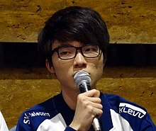
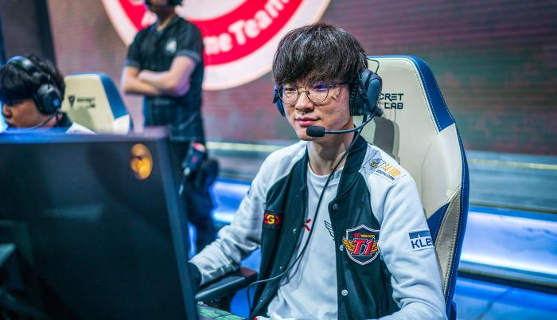
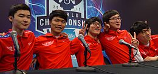

Faker con su equipo
  ¿Quien es Faker?
Lee Sang-Hyeok más conocido como Faker, es un jugador profesional surcoreano de League of Legends. Conocido anteriormente como GoJeonPa en el servidor coreano, fue contratado por SK Telecom de la LCK en 2013 y desde entonces ha jugado como carrilero central del equipo.
Faker es ampliamente reconocido por su gran dominio de las mecánicas del juego y amplia versatilidad de campeones. Es también conocido por usar a LeBlanc, Ahri, Zed, Orianna, Azir, Riven y Ryze.
Faker es uno de los dos únicos jugadores de la historia en haber ganado el Campeonato Mundial de League of Legends en tres ocasiones, en 2013, 2015 y 2016. El también ha ganado el All-Star Paris 2014, el Mid-Season Invitational tournament 2016, 2017 y el IEM World Championship 2016.
Faker nació el 7 de mayo de 1996 en Seúl. Él y su hermano fueron criados por sus abuelos y su padre, Lee Kyung-joon en el distrito de Gangseo-gu, Seúl. A Faker siempre le encantaron los rompecabezas y los videojuegos, incluyendo los "custom maps" del Warcraft III y el MOBA "Chaos". Descubrió League of Legends a finales de 2011, y pronto se volvió muy bueno en el juego. Dejó sus estudios en el instituto para poder unirse a SKT.